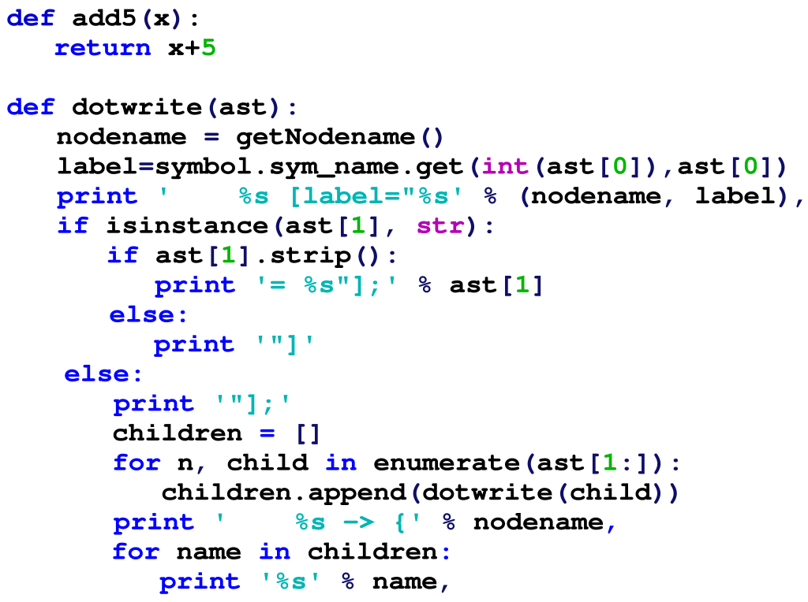

위키백과 검색
위키백과 검색
파이썬
파이썬(영어: Python)은 1991년 네덜란드계 소프트웨어 엔지니어인 귀도 반 로섬이 발표한 고급 프로그래밍 언어로, '인터프리터를 사용하는 객체지향 언어'이자 플랫폼에 독립적인, 동적 타이핑(dynamically typed) 대화형 언어다. 파이썬이라는 이름은 귀도가 좋아하는 코미디인〈Monty Python's Flying Circus〉에서 따온 것이다. 이름에서 고대신화에 나오는 커다란 뱀을 연상하겠지만 이와는 무관하다. 다만 로고에는 뱀 두마리가 형상화되어 있다. 간결하고 읽기 쉬운 문법이 특징인 프로그래밍 언어로 데이터 분석, 웹 개발, 인공지능 등 다양한 분야에서 활용된다. 파이썬은 비영리 파이썬 소프트웨어 재단이 관리하는 개방형, 공동체 기반 개발 모델이 있다.
파이썬은 비영리 파이썬 소프트웨어 재단이 관리하는 개방형, 공동체 기반 개발 모델이 있다.
개요
{kind=link}
파이썬은 초보자부터 전문가까지 사용자층을 보유하고 있다. 동적 타이핑(dynamic typing) 범용 프로그래밍 언어로, 펄 및 루비와 자주 비교된다. 다양한 플랫폼에서 쓸 수 있고, 라이브러리(모듈)가 풍부하여, 대학을 비롯한 여러 교육 기관, 연구 기관 및 산업계에서 이용이 증가하고 있다. 또 파이썬은 순수한 프로그램 언어로서의 기능 외에도 다른 언어로 쓰인 모듈들을 연결하는 접착제 언어로써 자주 이용된다. 실제 파이썬은 많은 상용 응용 프로그램에서 스크립트 언어로 채용되고 있다. 도움말 문서도 정리가 잘 되어 있으며, 유니코드 문자열을 지원해서 다양한 언어의 문자 처리에도 능하다.
파이썬은 기본적으로 해석기(인터프리터) 위에서 실행될 것을 염두에 두고 설계되었다.
-
주요 특징
- 동적 타이핑(dynamic typing). (실행 시간에 자료형을 검사한다)
- 객체의 멤버에 무제한으로 접근할 수 있다. (속성이나 전용의 메서드 훅을 만들어 제한할 수는 있음)
- 모듈, 클래스, 객체와 같은 언어의 요소가 내부에서 접근할 수 있고, 리플렉션을 이용한 기술을 쓸 수 있다.
-
해석 프로그램의 종류
- Cython: C로 작성된 인터프리터.
- 스택리스 파이썬: C 스택을 사용하지 않는 인터프리터.
- 자이썬: 자바 가상 머신용 인터프리터. 과거에는 제이파이썬(JPython)이라고 불렸다.
- IronPython: .NET 플랫폼용 인터프리터.
- PyPy: 파이썬으로 작성된 파이썬 인터프리터.
현대의 파이썬은 여전히 인터프리터 언어처럼 동작하나 사용자가 모르는 사이에 스스로 파이썬 소스 코드를 컴파일하여 바이트 코드(Byte code)를 만들어 냄으로써 다음에 수행할 때에는 빠른 속도를 보여 준다.
파이썬에서는 들여쓰기를 사용해서 블록을 구분하는 독특한 문법을 채용하고 있다. 이 문법은 파이썬에 익숙한 사용자나 기존 프로그래밍 언어에서 들여쓰기의 중요성을 높이 평가하는 사용자에게는 잘 받아들여지고 있지만, 다른 언어의 사용자에게서는 프로그래머의 코딩 스타일을 제한한다는 비판도 많다. 이 밖에도 실행 시간에서뿐 아니라 네이티브 이진 파일을 만들어 주는 C/C++ 등의 언어에 비해 수행 속도가 느리다는 단점이 있다. 그러나 사업 분야 등 일반적인 컴퓨터 응용 환경에서는 속도가 그리 중요하지 않고, 빠른 속도를 요하는 프로그램의 경우에도 프로토타이핑한 뒤 빠른 속도가 필요한 부분만 골라서 C 언어 등으로 모듈화할 수 있다(ctypes, SWIG, SIP 등의 래퍼 생성 프로그램들이 많이 있다). 또한 Pyrex, Psyco, NumPy 등을 이용하면 수치를 빠르게 연산할 수 있기 때문에 과학, 공학 분야에서도 많이 이용되고 있다. 점차적인 중요성의 강조로 대한민국에서도 점차 그 활용도가 커지고 있다.
파이썬은 1980년대 말 고안되어 네덜란드 CWI의 귀도 반 로섬이 1989년 12월 구현하기 시작하였다. 이는 역시 SETL에서 영감을 받은 ABC 언어의 후계로서 예외 처리가 가능하고, 아메바 OS와 연동이 가능하였다. 반 로섬은 파이썬의 주 저자로 계속 중심적 역할을 맡아 파이썬의 방향을 결정하여, 파이썬 공동체로부터 '자선 종신 이사'의 칭호를 부여받았다. 이 같은 예로는 리눅스의 리누스 토발즈 등이 있다.
파이썬 2
파이썬 2.0은 2000년 10월 16일 배포되었고, 많은 기능이 추가되었다. 그중 전면적인 쓰레기 수집기(GC, Garbage Collector)탑재와 유니코드 지원이 특징적이다. 그러나 가장 중요한 변화는 개발 절차 그 자체로, 더 투명하고 공동체 지원을 받는 형태가 되었다. 2020년 1월 1일부로 파이썬 2의 지원이 종료되었다.
파이썬 3
파이썬3000(혹은 파이썬3k)이라는 코드명을 지닌 파이썬의 3.0버전의 최종판이 긴 테스트를 거쳐 2008년 12월 3일자로 발표되었다. 2.x대 버전의 파이썬과 하위호환성이 없다는 것이 가장 큰 특징이다. 파이썬 3의 주요 기능 다수가 이전 버전과 호환되게 2.6과 2.7 버전에도 반영됐다.
파이썬 공식 문서에서는 "파이썬 2.x는 레거시(낡은 기술)이고, 파이썬 3.x가 파이썬의 현재와 미래가 될 것"이라고 요약을 했는데, 처음 배우는 프로그래머들은 파이썬 3으로 시작하는 것을 권장하고 있다.
2.x대 버전 과의 차이를 간략히 요약하면 다음과 같다.
- 사전형과 문자열형과 같은 내장자료형의 내부적인 변화 및 일부 구형의 구성 요소 제거.
- 표준 라이브러리 재배치.
- 향상된 유니코드 지원. (2.x에서는 유니코드를 표현하기 위해 u"문자열"처럼 유니코드 리터럴을 사용했지만 3.0부터는 모든 문자열이 유니코드이기 때문에 "문자열"처럼 표현하면 된다.)
- 한글 변수 사용 가능.
- print 명령문이 print() 함수로 바뀌게 되었다.
인기
파이썬이 자바를 넘어서 미 대학생들에게 프로그래밍 및 컴퓨터 공학 입문용으로 가장 널리 활용되고 있는 것으로 조사됐다고 ACM이 밝혔다. 이 기관에 따르면 상위 10 컴퓨터 공학 부문 중 8곳이, 상위 39 학교 중 27곳이 코딩 교육을 위해 파이썬을 이용하고 있었다.
기능과 철학
파이썬은 다양한 프로그래밍 패러다임을 지원하는 언어이다. 객체 지향 프로그래밍과 구조적 프로그래밍을 완벽하게 지원하며 함수형 프로그래밍, 관점 지향 프로그래밍 등도 주요 기능에서 지원 된다.
파이썬의 핵심 철학은
- "아름다운 게 추한 것보다 낫다." (Beautiful is better than ugly)
- "명시적인 것이 암시적인 것 보다 낫다." (Explicit is better than implicit)
- "단순함이 복잡함보다 낫다." (Simple is better than complex)
- "복잡함이 난해한 것보다 낫다." (Complex is better than complicated)
- "가독성은 중요하다." (Readability counts)
와 같이 PEP 20 문서에 잘 정리되어 있다.
파이썬은 언어의 핵심에 모든 기능을 넣는 대신, 사용자가 언제나 필요로 하는 최소한의 기능만을 사용하면서 확장해나갈 수 있도록 디자인되었다. 이것은 펄의 TIMTOWTDI(there's more than one way to do it - '문제를 해결하는 방법은 단 한 가지가 아니다') 철학과는 대조적인 것이며, 파이썬에서는 다른 사용자가 썼더라도 동일한 일을 하는 프로그램은 대체로 모두 비슷한 코드로 수렴한다. 라이브러리는 기본 기능에 없는 많은 기능을 제공한다.
또, 파이썬에서는 프로그램의 문서화가 매우 중시되고 있어 언어의 기본 기능에 포함되어 있다. 파이썬은 원래 교육용으로 설계되었기 때문에 읽기 쉽고, 그래서 효율적인 코드를 되도록 간단하게 쓸 수 있도록 하려는 철학이 구석 구석까지 침투해 있어, 파이썬 커뮤니티에서도 알기 쉬운 코드를 선호하는 경향이 강하다.
라이브러리
파이썬에는 「건전지 포함("Battery Included")」이란 기본 개념이 있어, 프로그래머가 바로 사용할 수 있는 라이브러리와 통합 환경이 이미 배포판과 함께 제공된다. 이로써 파이썬의 표준 라이브러리는 매우 충실하다. 여기에는 정규 표현식을 비롯해 운영 체제의 시스템 호출이나 XML 처리, 직렬화, HTTP ,FTP 등의 각종 통신 프로토콜, 전자 메일이나 CSV 파일의 처리, 데이터베이스 접속, 그래픽 사용자 인터페이스, HTML, 파이썬 코드 구문 분석 도구 등을 포함한다.
서드파티 라이브러리도 풍부하며, 행렬 연산 패키지 넘피(NumPy)이나 이미지 처리를 위한 필로우(Pillow), SDL 래퍼인 파이게임(PyGame), HTML/XML 파싱 라이브러리인 뷰티풀수프(Beautiful Soup) 등은 잘 알려져 있다. 다만, 가장 낮은 수준의 라이브러리까지 포함하면 너무 많아서 감당하기 쉽지 않으므로, 최근 파이썬 패키지 인덱스, 곧 PyPI (Python Packages Index)로 불리는 라이브러리의 저장소(repository)를 관리하는 공식 기구를 새롭게 도입하게 되었다. 2018년 1월 기준으로 파이썬 패키지 인덱스는 125,762 개의 다양한 기능을 가진 패키지를 관리하고 있다.
문법
파이썬의 문법에서 가장 잘 알려진 특징은 들여쓰기를 이용한 블록 구조를 들 수 있다. 이것은 보통 C 등에서 쓰이는 괄호를 이용한 블록 구조를 대신한 것으로 줄마다 처음 오는 공백으로 눈에 보이는 블록 구조가 논리적인 제어 구조와 일치하게 하는 방식이다. 아래는 C와 파이썬으로 재귀 호출을 사용한 계승을 계산하는 함수를 정의한 것이다.
파이썬
def factorial(x):
if x == 0:
return 1
else:
return x * factorial(x - 1)
들여쓰기가 잘 된 C
int factorial(int x) {
if(x == 0) {
return 1;
}
else {
return x * factorial(x - 1);
}
}
이렇게 비교해 보면 파이썬과 "정리되어 들여쓰기가 된" C 언어와는 차이가 거의 없어 보인다. 그러나 여기서 중요한 것은 위쪽의 C 형식은 가능한 여러 스타일 가운데 하나일 뿐이라는 사실이다.
즉, C로는 똑같은 구문을 다음과 같이 쓸 수도 있다.
읽기 어렵게 쓰인 C
int factorial(int x) {
if(x == 0) {return 1;} else
{return x * factorial(x - 1); } }
파이썬으로는 이렇게 쓰는 것을 허용하지 않는다. 파이썬에서 들여쓰기는 한 가지 스타일이 아니라 필수적인 문법에 속한다. 파이썬의 이러한 엄격한 스타일 제한은 쓰는 사람에 관계 없이 통일성을 유지하게 하며, 그 결과 가독성이 향상될 수 있는 장점이 있지만 다른 한편으로는 프로그램을 쓰는 스타일을 선택할 자유를 제약하는 것이란 의견도 있다.
C와 다르지만 아래와 같이 줄바꿈을 하지 않고 사용할 수도 있다.
다음과 같이 한줄로 작성하여 표현하는 것을 'pythonic 하다'라고 말할 수 있다.
1 def factorial(x):
2 return 1 if x==0 else x * factorial(x - 1)
자료형
파이썬은 다음과 같은 자료형들을 갖고 있다.
-
기본 자료형:
- 정수형
- 긴 정수형(long integer) - 메모리가 허락하는 한 무제한의 자릿수로 정수를 계산할 수 있다. 파이썬 3 버전에서는 사라지고, 대신 정수형의 범위가 무제한으로 늘어났다.
- 부동소수점형
- 복소수형
- 문자형
- 유니코드 문자형
- 함수형
- 논리형(boolean)
-
집합형 자료형:
- 리스트형 - 내부의 값을 나중에 바꿀 수 있다.
- 튜플(tuple)형 - 한 번 값을 정하면 내부의 값을 바꿀 수 없다.
- 사전형 - 내부의 값을 나중에 바꿀 수 있다.
- 집합형 - 중복을 허락하지 않는다. 변경 가능하게도, 변경 불가능하게도 만들 수 있다.
또 많은 객체 지향 언어와 같이, 사용자가 새롭게 자신의 형을 정의할 수도 있다.
파이썬은 동적 타이핑의 일종인 덕 타이핑을 사용하는 언어이기 때문에, 변수가 아닌 값이 타입을 가지고 있고, 변수는 모두 값의 참조(C++의 참조)이다.
| 종류 | 설명 | 문법 예 | |
|---|---|---|---|
| int | 이뮤터블(immutable) | 정수로서 크기는 무제한. | 42 |
| float | 이뮤터블(immutable) | 부동소수점 수 (시스템 정의 정밀도). | 3.14159265358979 |
| complex | 이뮤터블(immutable) | 복소수. (실수와 허수) | 3+2.7j |
| bool | 이뮤터블(immutable) | 진리값. (불린) | True False |
| str | 이뮤터블(immutable) | 문자열: 일련의 유니코드 코드포인트. |
'Wikipedia' "Wikipedia" """Spanning multiple lines""" |
| bytes | 이뮤터블(immutable) | 일련의 바이트. | b'Some ASCII' b"Some ASCII" bytes([119, 105, 107, 105]) |
| bytearray | 뮤터블(mutable) | 일련의 바이트. |
bytearray(b'Some ASCII') bytearray(b"Some ASCII") bytearray([119, 105, 107, 105]) |
| list | 뮤터블(mutable) | 목록, 리스트. 혼합 형태를 포함할 수 있다. |
[4.0, 'string', True] |
| tuple | 이뮤터블(immutable) | (불변) 목록. 혼합 형태를 포함할 수 있다. |
(4.0, 'string', True) |
| set, frozenset |
뮤터블(mutable), 이뮤터블(immutable) |
순서가 정해지지 않은 집합. 중복 허용 안 함. |
{4.0, 'string', True} frozenset([4.0, 'string', True]) |
| dict | 뮤터블(mutable) | 연관 배열 목록. (키와 값 목록) | {key1: value1, key2: value2} |
동작하는 플랫폼
첫 파이썬 버전은 매킨토시에서 사용할 목적으로 개발되었지만, 지금은 다양한 플랫폼에서 동작한다. 하지만 안드로이드/iOS에서는 동작하지 않는다.
또한 동작이 되도록 만들 가능성도 적어보인다.
- 마이크로소프트 윈도우(9x/NT 계열은 최신판, 3.1 및 MS-DOS는 옛 버전만)
- 매킨토시(맥 OS 9 이전, 맥 OS X 이후 포함)
- 각종 유닉스
- 리눅스
- 팜 OS
- 노키아 시리즈 60
한글 다루기
원래 파이썬은 미국 지역에서 개발되었기 때문에 한글이나 한자와 같은 2바이트 문자를 지원하지 않았다. 그러나 파이썬 2.0에서 유니코드 문자형을 새로 도입하여 여러 나라의 언어를 다룰 수 있게 되었다. 다른 스크립트 언어와 달리 파이썬에서는 문자의 인코딩과 내부 유니코드 표현을 명확하게 구별한다. 유니코드 문자는 메모리에 저장되는 추상적인 개체이다. 화면에 나타내거나 파일 입출력을 할 때는 변환 코덱의 힘을 빌려서 특정 인코딩으로 변환한다. 또, 소스 코드의 문자 코드를 인식하는 기능이 있어, 다른 문자 코드로 쓰여진 프로그램의 동작이 달라질 위험을 줄여 준다. 파이썬 2.4에서는 한중일 코덱이 표준으로 배포판에 포함되었으므로 이제 한글 처리에 문제는 거의 없다. 예를 들어 윈도우 판의 IDLE에서 한글 입출력을 잘 지원한다.
사용 현황
파이썬은 많은 제품이나 기업 및 연구기관에서 쓰이고 있다. 대표적인 몇 가지는 다음과 같다.
파이썬으로 작성된 자유-오픈 소스 소프트웨어
- 아나콘다(Anaconda)
- 비트토렌트(BitTorrent)
- 메일맨(MailMan)
- 모인모인(MoinMoin Wiki)
- 플러커(Plucker)
- 포티지(Portage)
- 파이솔(PySol)
- 뷰CVS(ViewCVS)
- Zope / Plone
- Trac
- 장고 (웹 프레임워크)
- 드롭박스(Dropbox)
파이썬을 내부적으로 사용하는 소프트웨어
- softimage|xsi (3D 애니메이션 소프트웨어)
- 잉크스케이프(Inkscape)
- 페인트샵 프로(Paint Shop Pro)
- 문명 IV
- 셰이드(Shade)
- TRIBON (3D CAD 소프트웨어)
- 오토데스크 마야 (3D 애니메이션 소프트웨어)
- MotionBuilder (3D 애니메이션 소프트웨어)
- Softimage (3D 애니메이션 소프트웨어)
- Cinema 4D (3D 애니메이션 소프트웨어)
- BodyPaint 3D (3D 애니메이션 소프트웨어)
- Blender 3D (3D 애니메이션 소프트웨어)
- Sidefx Houdini (3D 애니메이션 소프트웨어)
- Abaqus (유한요소해석 소프트웨어)
- TORRENT (공유프로그램)
- Rhino 3D CAD (3D 모델링 소프트웨어)
- 카카오톡 (모바일/PC 메신저)
- MODO 3D (3D 모델링 소프트웨어)
파이썬을 내부적으로 사용하는 소프트웨어
- 야후
- 구글
- 유튜브
- 인더스트리얼 라이트 앤드 매직 (ILM)
- 미국항공우주국 (NASA)
- 미국 해양대기청 (NOAA)
- 카카오
실행 속도 향상 관련
- 저스트 인 타임 컴파일러: Psyco, PyPy
- 외부 함수 호출 라이브러리 : ctypes
- 파이썬 모듈 생성 언어 : 사이썬(Cython), Pyrex
- Wrapper 생성 유틸리티 : SWIG, SIP, Boost.Python, F2PY, Pyfort, PyCXX, Babel, Modulator
- 수치 연산 라이브러리 : NumPy
- 병렬 처리 모듈: 다중 처리
- 기타 : PyInline, Weave, Py2Cmod, RPython, Shed Skin, doctest, VPython
IDE 목록
- PyCharm
-
Visual Studio : macOS와 윈도우를 지원하는 .NET 개발 환경 IDE
- Visual Studio 2010 - 2015 : Windows 7 이전의 , 즉 Windows XP 나 Windows Vista 환경에 좋은 IDE
- Visual Studio 2017 : Windows 7 환경에 좋은 IDE
- Visual Studio 2019 : 32비트 환경에 좋은 IDE
- Visual Studio 2022 : 64비트 환경에 좋은 IDE
- Visual Studio Code : 파이썬 뿐이 아니라 대부분의 언어를 지원한다. 텍스트 에디터인 단점만 빼면 모든 언어를 지원한다고 봐도 된다. 또한 자동인식 기능이 있다.
- Python IDLE
- Xcode
- 스파이더 (소프트웨어)
비평
파이썬은 들여쓰기에 대해 비평을 받아왔는데, 파이썬의 들여쓰기는 비정규적이고 자동화가 불가능하다. 또, 공백의 양에 따라 워드의 의미가 바뀔 수 있다. 들여쓰기에만 의지할 경우 잠재적으로 위험해질 수도 있는데, 감지하지 못하는 논리적인 버그를 만들어낼 수 있기 때문이다.
빌드
파이썬은 범용 빌드 시스템 및 크로스 플랫폼의 응용소프트웨어를 위한 훌륭한 자원으로 사용하는데 많은 컴퓨터 엔지니어들은 파이썬의 지속적인 발전에서 이를 매우 긍정적으로 받아들이고 있다. 이러한 지속적인 영향력은 파이썬이 여러 컴퓨터과학 분야에서 문법의 보편적인 가독성과 모듈의 분리 및 재결합의 용이성 등 그 활용면에서 응용의 광범위한 가능성을 시사한다고 볼 수 있다.
같이 보기
- 람다 함수
- doctest